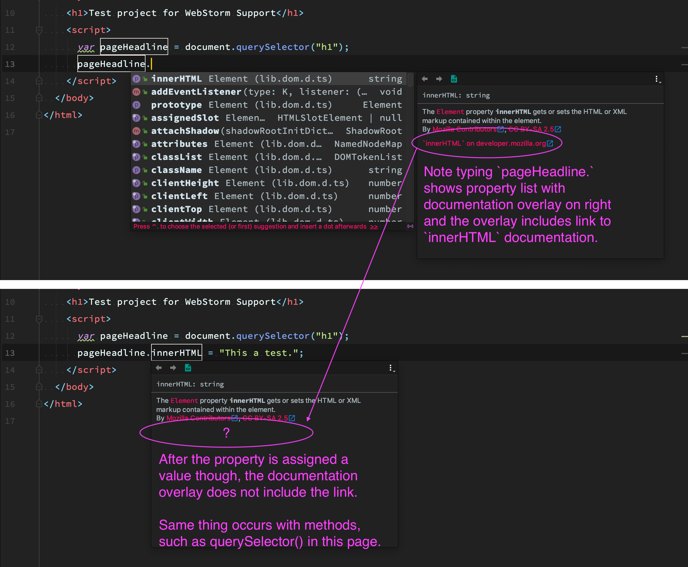

Note in the code for this page within the script tag, when typing pageHeadline. will present the list of properties with the documentation overlay to the right (see screen shot) and the overlay includes a link to the Javascript properties, innerHTML in this case. After typing the full statement though, placing the cursor in the word innerHTML presents the documentation overlay without the link.
Same thing also occurs with Javascript methods, such as querySelector() in this page.
